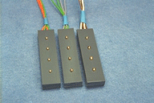
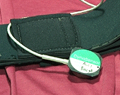
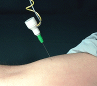

|
Haemo
Dynamiek
|
| plaatje Swan Ganz |
Intra-arteriële en (multi)-intra-cardiële
druk-katheders met externe druksensor kunnen direct op het Fysio Flex System
worden aangesloten.
Intra-arteriële druk-catheders met
ingebouwde druksensoren kunnen in het algemeen ook direct op het Fysio
Flex Ssytem worden aangesloten. Neem hierover vantevoren contact op met
ID-Spon.
Ook Intra-veneuze drukken op deze manier
worden gemeten, echter hiervoor moet wel de juiste druksensor worden gebruikt
(low drift). |
| plaatje FinaPress |
Voor het non-invasief meten van de dynamische
bloeddruk kan ook gebruik worden gemaakt van een FinaPress of een PortaPress.
Het uitgangssignaal van deze systemen kan rechtsstreeks op een niet-patiënt-veilige
ingang van het Fysio Flex System worden aangesloten. |
| plaatje hoogtesensor |
Bij metingen met de FinaPress of PortaPress kan de hydrostatische druk
worden gecoorrigeerd met de hiernaast afgebeelde hoogte-sensor. Deze hoogte-sensor
kan direct op een patiënt-veilige ingang worden aangesloten. |
| plaatje pulsemetric |
Gezocht wordt naar een kleiner en goedkoper
alternatief voor de FinaPress, dat volledig geïntegreerd kan worden
in het Fysio Flex System. |

|
Alle standaard Nellcor oxi-sensors kunnen
via een eenvoudig interface kabeltje worden aangesloten op het Fysio Flex
Sytem. Hiermee kan vooralsnog niet de zuurstof saturatie worden bepaald,
omdat enkel gebruik wordt gemaakt van de golflengte in het infra-rood.
Dit signaal is uitermate geschikt voor
het bepalen van de heart rate en voor het bepalen van korte termijn veranderingen
van het arteriële bloedvolume. |
| plaatje eigen sensor |
Binnen de ID-Spon is een experimentele photo-plethysmografische
sensor gebouwd op een golflengte van 940 nm en geoptimaliseerd op backscattering
(reflectie) van het licht.
Deze sensor is enerzijds veel gevoeliger
dan de standaard Nellcor sensors en is bovendien afgeschermd voor daglicht,
waardoor de stabiliteit van het te meten signaal groter is.
Op verzoek kunnen andere vormen worden
geleverd, danwel kunnen deze sensors worden ingebouwd in behuizingen van
Nellcor of soortgelijke. |
| plaatje druksensor |
Met de piezo-electrische
druksensor kan het dynamisch verloop van de omvang van een vinger worden
bepaald.
Deze sensor is uitermate geschikt voor
educatieve doeleinden (degelijk en goedkoop), waarbij de ruwe vorm van
de polsgolf en relaxatie tussen ECG en polsgolf van interesse zijn. Deze
sensor is niet geschikt voor langdurig gebruik, vanwege het relatief sterk
afknijpen.
De sensor kan zowel direct op een patiënt-veilig
alsook direct op een niet-patiënt-veilig kanaal van het Fysio Flex
System worden aangesloten. |
|
Thoracic Electrical Bioimpedance is binnen Nederland (Europa) een weinig
gebruikte en omstreden methode voor de bepaling van de haemodynamische
parameters.
Deze methode kan vooralsnog niet met het Fysio Flex System worden uitgevoerd. |
|
Respiratie
|
| plaatje ECG |
Een patiënt-veilige ingang kan optioneel worden uitgebreid met
bio-impedance module voor de bepaling van de respiratie. Met 1 set electroden
kan dan gelijktijdig 1 ECG-afleiding en het respiratie signaal worden afgeleid. |
| plaatje drukband |
Middels een drukcuff met geringe voordruk en een disposable druksensor
aangesloten op een patiënt-veilig kanaal van het Fysio Flex System
kan direct het respiratie signaal worden gemeten. |
| plaatje ID-ppg |
Hoe het kan weet ik niet,
maar met een photo-plethysmograaf direct onder de zwevende ribben aangebracht
kan een prachtig respiratie signaal worden verkregen. |
| plaatje magneet |
Hoe het kan weet ik ook nog niet,
maar met een magnetische sensor kan blijkbaar ook de respiratie worden
bepaald.
Een magneet sensor kan direct worden aangesloten op een patiënt-veilige
ingang van het Fysio Flex System. |
| plaatje neustherm |
Een neusthermistor is een praktisch zeer eenvoudige methode om een
indruk van de respiratie te verkrijgen.
Een neusthermistor kan via een aanpassings-kabel direct worden aangesloten
op een patiënt-veilige ingang van het Fysio Flex System. |
|
Overige
Oppervlakte Potentialen
|
electrolytische
electroden |
In het algemeen wordt geadviseerd Ag/AgCl electroden te gebruiken (disposable,
gesinterd), deze kunnen standaard worden aangesloten op de patiënt-veilige
ingangen van het Fysio Flex System.
Massief metallische electroden kunnen in het algemeen ook direkt worden
aangesloten op de patiënt-veilige ingangen. Indien zeer kleine electrode
oppervlakte en/of instabiele electroden gewenst zijn, kan de ingangsimpedantie
van één of meer kanalen verhoogd worden (pH-modificatie). |
capacitieve
electroden |
Deze kunnen niet standaard op het Fysio Flex System worden aangesloten. |
ECG/IECG
paced-ECG |
standaard op patiënt-veilige ingang van het Fysio Flex System |
| EEG |
standaard op patiënt-veilige ingang van het Fysio Flex System |
EMG
 |
standaard op patiënt-veilige ingang van het Fysio Flex System
Hiernaast een aantal 4-kanaals EMG-electroden, met speciaal geslepen
zuiver gouden electroden, ten behoeve van bron-localisatie experimenten. |
| EMG naald |
standaard op patiënt-veilige ingang van het Fysio Flex System
(hoge bandbreedte / hoge ingangsimpedantie) |
| ENG |
standaard op patiënt-veilige ingang van het Fysio Flex System
(hoge gain / lage ruis) |
| TMPD |
TransMucosodaal Potential Difference (pH-modificatie) |
| EOG |
standaard op patiënt-veilige ingang van het Fysio Flex System |
| EP |
standaard op patiënt-veilige ingang van het Fysio Flex System
?? |
| EGG |
glotus ?? |
|
Algemene
Fysische Parameters
|
| kracht
plaatje kauw |
Alle krachtsensoren op basis van een weerstandsbrug kunnen standaard
worden aangesloten op het Fysio Flex System. Dus ook speciale constructies
met opgeplakte rekstrookjes.
ID-Spon kan zeer kleine krachtsensoren (5 * 5 * 3 mm) leveren, welke
via een speciaal interface kastje kunnen worden aangesloten op het Fysio
Flex System. |
| 
 |
Als enkelvoudige (robuste) versnellingssensor wordt de DynaPort sensor
aangeraden. Deze sensor is uitermate geschikt voor het meten van de versnelling
van de extremiteiten of andere lichaamsdelen, niet alleen tijdens normale
bewegingen, maar ook tijdens sport en andere inspanningen. Deze sensor
past standaard op het Fysio Flex System.
Daarnaast kan de ID een kleine (8 * 8 * 3 mm) 2-richtingen versnellingsopnemer
leveren, welke kan worden aangesloten op 2 patient-veilige ingangen van
het Fysio Flex System.
In de afbeelding hiernaast is deze sensor ingebouwd en gemonteerd op
een stimulatienaald, voor de bepaling van de spiercontractie-snelheid tijdens
elektro-stimulatie. |
| afstand |
Standaard verkrijgbaar is een contactloze afstandssensor met een bereik
van 10 ... 80 cm. Deze sensor kan via een interface kabeltje worden aangesloten
op het Fysio Flex System.
Andere bereiken zullen in de toekomst mogelijk zijn. |
| druk |
Nagenoeg alle druksensoren kunnen standaard op het Fysio Flex System
worden aangesloten.
Ook leverbaar is een absolute druksensor voor het meten van de atmosferische
druk. |
| temperatuur |
YS400 kan via een interface kabeltje standaard op het Fysio Flex System
worden aangesloten |
| vochtigheid |
nog geen goede sensor gevonden |